With this guide you will gain a tool to run non-packaged Lever programs and edit any Lever program, or create new programs.
You should package your own programs so that people do not need to do this. We will tackle it and update the docs as soon as someone gets so far to have programs to package and tells about it for us!
All Lever beginner guides will assume you use this tool. If you don't, we assume you are not a beginner. :-) But by all means use the tools you find comfort with.
Download Visual Studio Code from their website and install it.
When you start the program, they provide a very nice guide for getting started with the editor. I propose you will read it after we are done. You can open it again from the menu with 'Help' -> 'Documentation'. Close it for now.
So, you should have yourself a window such as in the screenshot here.
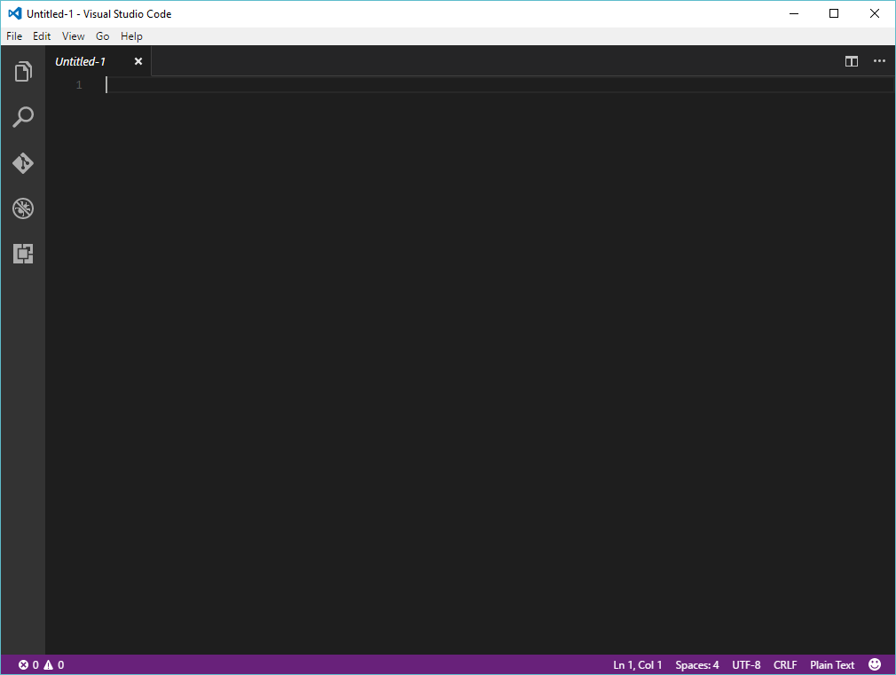In the 'extensions' tab from that sidebar. Search for 'lever' -extension. You should find at least one extension with that name. Pick the official extension, in the name there should read 'lever'. Install it. Once it has installed, remember to enable it. That 'enable' button will appear in the same place where the install button was.
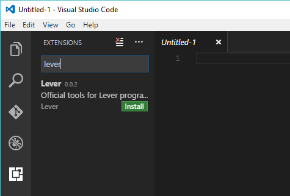Next, you get the following view with 'File' -> 'Preferences' -> 'User Settings'. You can close those other files pressing a cross. You only need to edit the 'settings.json'.
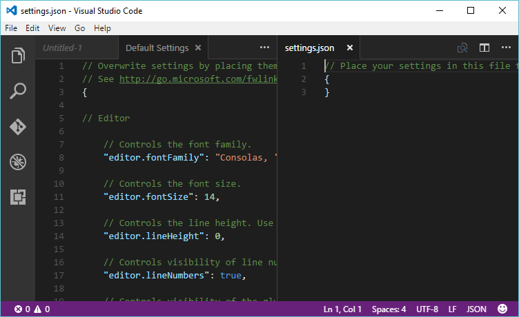The lever tools require to know where you've stored the lever runtime. The runtime comes in a ZIP archive and doesn't have an installer that would configure a path into your system. It's a small language and it's early days for Lever. Also you could use your own runtime any time. Visual Studio Code needs to know where the runtime directory is so that you could run the Lever programs with it.
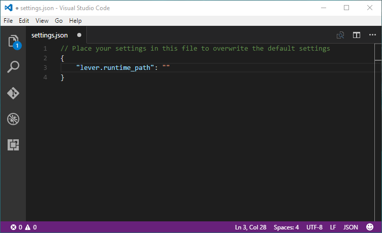At this point, download and extract the lever runtime if you haven't done so already. Put it somewhere on your computer. Then open the directory such as below.
Now you see a simple way to point out for a program where the runtime is.

Paste it to the 'lever.runtime_path'.
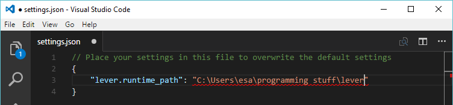The backslash standardized as an escape character - even lever uses backslash as an escape character! So the above path would read something like "C:Usersesaprogramming stufflever" when it finally gets to the debugger that should read it.
You can escape escape characters with themselves. Just duplicate every backslash like below:
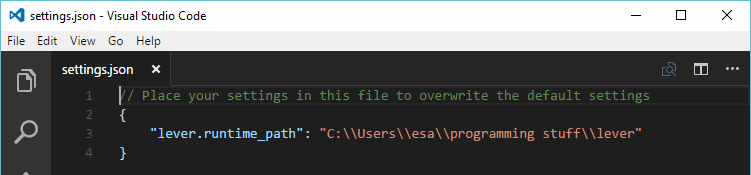It appears that VSCode developers don't let you to define file encoding by an extension. To have no encoding issues with Lever or any Lever related repositories, put yet these in!
"editor.tabSize": 4,
"editor.insertSpaces": true,
"files.eol": "\n",
"files.encoding": "utf8",
Above settings are very sane defaults not provided by VSCode, yet they are used nearly everywhere outside Windows.
In the screenshots below you can see some "CRLF" in the status bar. It should be always "LF" when you program Lever. Also make sure there reads "utf-8" next to it.
Now we have setup an environment for ourselves. Lets test it so we can be sure it works. This way you also see what you need to do to run a program.
Create a hello-world -directory and use 'File' -> 'Open Folder' to open it.
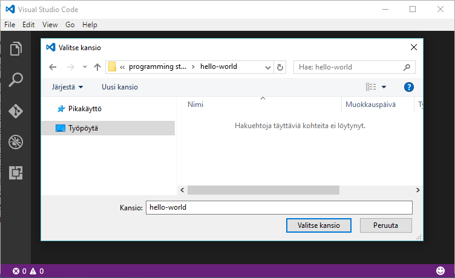 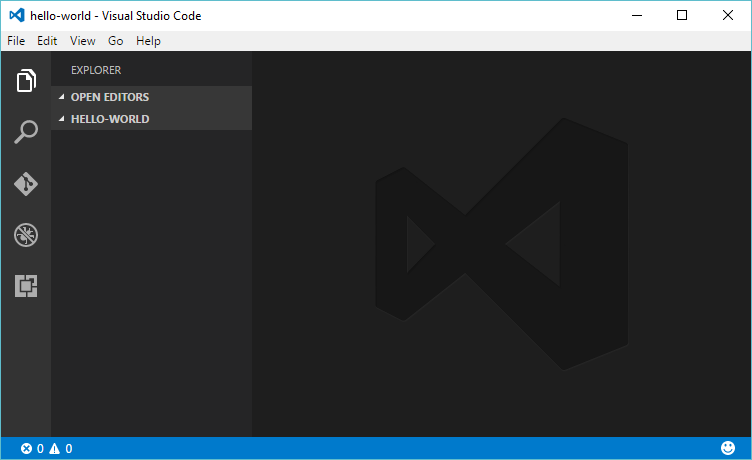Create a file 'main.lc' and write your print("hello world"). If this is a school class assigment, remember to write something very rude inside the quotes in your native language. (non latin letters should work there, but I'm not sure, you can try)
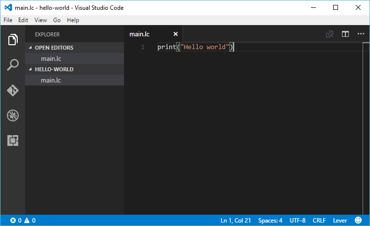Next, since there's no .vscode in the directory, if you press F5, or go click 'play' from the debugging sidetab, it asks for environment. If you click it wrong, just delete .vscode directory and try again.
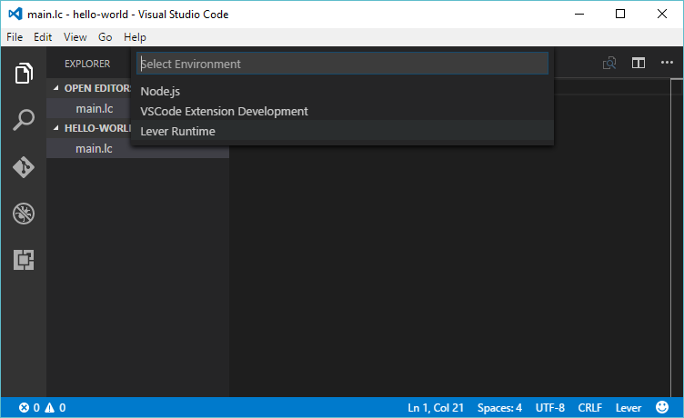 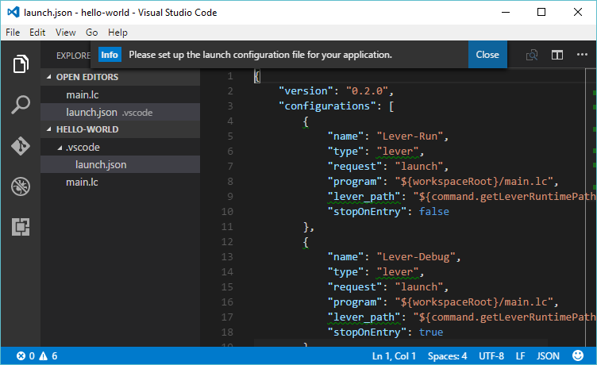Next put the 'main.lc' open and close the sidetab. It's optional but that way it's more clear what's going on.
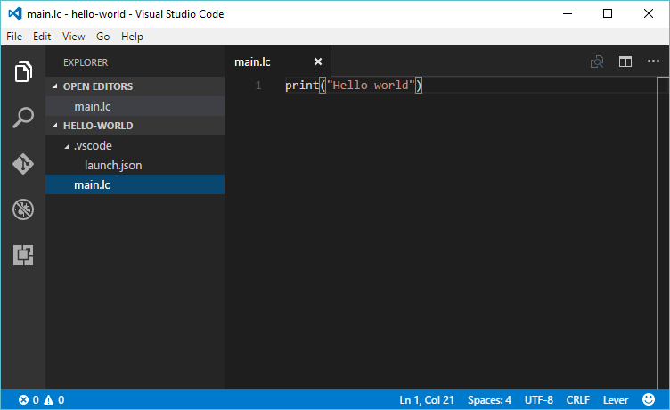Press F5, and prepare yourself.
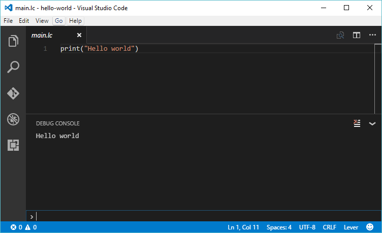If everything has been going well so far. That's it. You are done with this guide.
To learn how to use your new editor, you may like to go read the Visual Studio Code documentation. So you know how to use some of the nicer features.
The next guide: Browsing sample programs with your new editor
Oh. And who's a good new lever programmer? YOU ARE!! You gorgeous guy/gal who reads the documentation. I'm sorry if that irritates you. Lever is pretty fun language for people who don't like being herded. Give it a chance!